we need to load the file firstly
# load the dataset
transactions = read.csv('./data/transactions.csv')
accounts = read.csv('./data/accounts_analytical.csv')and then take a glance for these datasets
# to find descriptive information for transactions
Hmisc::describe(transactions)## transactions
##
## 10 Variables 1056320 Observations
## --------------------------------------------------------------------------------
## id
## n missing distinct Info Mean Gmd .05 .10
## 1056320 0 1056320 1 1335311 1293046 86297 168953
## .25 .50 .75 .90 .95
## 430263 858506 2060979 3562913 3617377
##
## lowest : 1 5 6 7 8
## highest: 3682983 3682984 3682985 3682986 3682987
## --------------------------------------------------------------------------------
## account_id
## n missing distinct Info Mean Gmd .05 .10
## 1056320 0 4500 1 2937 2537 238 470
## .25 .50 .75 .90 .95
## 1204 2434 3660 6636 9041
##
## lowest : 1 2 3 4 5, highest: 11333 11349 11359 11362 11382
## --------------------------------------------------------------------------------
## date
## n missing distinct
## 1056320 0 2191
##
## lowest : 1993-01-01 1993-01-02 1993-01-03 1993-01-04 1993-01-05
## highest: 1998-12-27 1998-12-28 1998-12-29 1998-12-30 1998-12-31
## --------------------------------------------------------------------------------
## type
## n missing distinct
## 1056320 0 2
##
## Value credit debit
## Frequency 405083 651237
## Proportion 0.383 0.617
## --------------------------------------------------------------------------------
## amount
## n missing distinct Info Mean Gmd .05 .10
## 1056320 0 35890 0.997 5924 8326 15 15
## .25 .50 .75 .90 .95
## 136 2100 6800 18400 25700
##
## lowest : 0 1 2 3 4, highest: 81900 85800 86400 87300 87400
## --------------------------------------------------------------------------------
## balance
## n missing distinct Info Mean Gmd .05 .10
## 1056320 0 111042 1 38518 23652 13635 16291
## .25 .50 .75 .90 .95
## 22403 33143 49604 68866 82673
##
## lowest : -41126 -40938 -40817 -40581 -40381, highest: 192663 193910 194119 196107 209637
## --------------------------------------------------------------------------------
## bank
## n missing distinct
## 273508 782812 13
##
## lowest : AB CD EF GH IJ, highest: QR ST UV WX YZ
##
## Value AB CD EF GH IJ KL MN OP QR ST UV
## Frequency 21720 19597 21293 21499 20525 21234 19623 21094 22285 21711 21167
## Proportion 0.079 0.072 0.078 0.079 0.075 0.078 0.072 0.077 0.081 0.079 0.077
##
## Value WX YZ
## Frequency 20178 21582
## Proportion 0.074 0.079
## --------------------------------------------------------------------------------
## account
## n missing distinct Info Mean Gmd .05 .10
## 295389 760931 7665 1 45670919 35374273 0 2758771
## .25 .50 .75 .90 .95
## 17828584 45750951 72013407 88619136 94227504
##
## lowest : 0 399 1460 15318 18376
## highest: 99959164 99959903 99964111 99985640 99994199
## --------------------------------------------------------------------------------
## method
## n missing distinct
## 873206 183114 3
##
## Value bank transfer cash credit card
## Frequency 273509 591661 8036
## Proportion 0.313 0.678 0.009
## --------------------------------------------------------------------------------
## category
## n missing distinct
## 521006 535314 7
##
## lowest : household payment insurance payment interest credit loan payment negative balance charge
## highest: interest credit loan payment negative balance charge pension benefit statement charge
##
## household payment (118065, 0.227), insurance payment (18500, 0.036), interest
## credit (183114, 0.351), loan payment (13580, 0.026), negative balance charge
## (1577, 0.003), pension benefit (30338, 0.058), statement charge (155832, 0.299)
## --------------------------------------------------------------------------------glimpse(accounts)## Rows: 4,500
## Columns: 64
## $ account_id <int> 1, 2, 3, 4, 5, 6, 7, 8,…
## $ acct_creation_date <chr> "1995-03-24", "1993-02-…
## $ statement_frequency <chr> "monthly", "monthly", "…
## $ account_district <chr> "Pisek", "Hl.m. Praha",…
## $ num_customers <int> 1, 2, 2, 1, 1, 1, 1, 2,…
## $ credit_cards <int> 1, 2, 2, NA, 1, 1, 1, 2…
## $ loan_date <chr> "", "1994-01-05", "", "…
## $ loan_amount <int> NA, 80952, NA, NA, NA, …
## $ loan_payment <int> NA, 3373, NA, NA, NA, N…
## $ loan_term <int> NA, 24, NA, NA, NA, NA,…
## $ loan_status <chr> "", "expired", "", "", …
## $ loan_default <lgl> NA, FALSE, NA, NA, NA, …
## $ max_withdrawal <int> 7500, 42000, 7400, 5250…
## $ min_withdrawal <int> 15, 15, 15, 15, 15, 15,…
## $ max_balance <int> 30415, 69302, 53447, 34…
## $ min_balance <int> 1000, 1100, 1000, 800, …
## $ credit_bank_transfer_other_txn_ct <int> 45, 70, 0, 0, 0, 0, 0, …
## $ credit_bank_transfer_other_txn_tot <int> 165555, 1537936, 0, 0, …
## $ credit_bank_transfer_other_avg_txn <dbl> 3679.00, 21970.51, 0.00…
## $ credit_cash_other_txn_ct <int> 12, 12, 28, 1, 1, 1, 26…
## $ credit_cash_other_txn_tot <int> 25700, 48400, 170989, 8…
## $ credit_cash_other_avg_txn <dbl> 2141.667, 4033.333, 610…
## $ credit_other_interest_credit_txn_ct <int> 45, 70, 18, 30, 15, 47,…
## $ credit_other_interest_credit_txn_tot <int> 3067, 10719, 2073, 2747…
## $ credit_other_interest_credit_avg_txn <dbl> 68.15556, 153.12857, 11…
## $ debit_bank_transfer_household_payment_txn_ct <int> 40, 65, 13, 29, 14, 47,…
## $ debit_bank_transfer_household_payment_txn_tot <int> 98080, 472290, 14755, 6…
## $ debit_bank_transfer_household_payment_avg_txn <int> 2452, 7266, 1135, 2078,…
## $ debit_cash_statement_charge_txn_ct <int> 40, 65, 13, 29, 14, 46,…
## $ debit_cash_statement_charge_txn_tot <int> 600, 975, 195, 435, 210…
## $ debit_cash_statement_charge_avg_txn <int> 15, 15, 15, 15, 15, 15,…
## $ debit_cash_other_txn_ct <int> 57, 172, 19, 33, 21, 54…
## $ debit_cash_other_txn_tot <int> 82190, 1000242, 56760, …
## $ debit_cash_other_avg_txn <dbl> 1441.930, 5815.360, 298…
## $ debit_bank_transfer_loan_payment_txn_ct <int> 0, 24, 0, 0, 0, 0, 0, 0…
## $ debit_bank_transfer_loan_payment_txn_tot <int> 0, 80952, 0, 0, 0, 0, 0…
## $ debit_bank_transfer_loan_payment_avg_txn <dbl> 0, 3373, 0, 0, 0, 0, 0,…
## $ debit_bank_transfer_insurance_payment_txn_ct <int> 0, 0, 13, 0, 0, 0, 0, 0…
## $ debit_bank_transfer_insurance_payment_txn_tot <int> 0, 0, 46007, 0, 0, 0, 0…
## $ debit_bank_transfer_insurance_payment_avg_txn <int> 0, 0, 3539, 0, 0, 0, 0,…
## $ debit_bank_transfer_other_txn_ct <int> 0, 0, 13, 30, 0, 0, 0, …
## $ debit_bank_transfer_other_txn_tot <int> 0, 0, 4251, 38550, 0, 0…
## $ debit_bank_transfer_other_avg_txn <dbl> 0, 0, 327, 1285, 0, 0, …
## $ credit_bank_transfer_pension_benefit_txn_ct <int> 0, 0, 0, 34, 19, 51, 0,…
## $ credit_bank_transfer_pension_benefit_txn_tot <int> 0, 0, 0, 188802, 95323,…
## $ credit_bank_transfer_pension_benefit_avg_txn <int> 0, 0, 0, 5553, 5017, 66…
## $ debit_credit_card_other_txn_ct <int> 0, 0, 0, 0, 0, 0, 1, 0,…
## $ debit_credit_card_other_txn_tot <int> 0, 0, 0, 0, 0, 0, 5900,…
## $ debit_credit_card_other_avg_txn <dbl> 0.000, 0.000, 0.000, 0.…
## $ debit_cash_household_payment_txn_ct <int> 0, 0, 0, 0, 0, 0, 0, 0,…
## $ debit_cash_household_payment_txn_tot <int> 0, 0, 0, 0, 0, 0, 0, 0,…
## $ debit_cash_household_payment_avg_txn <dbl> 0.00, 0.00, 0.00, 0.00,…
## $ debit_cash_negative_balance_charge_txn_ct <int> 0, 0, 0, 0, 0, 0, 0, 0,…
## $ debit_cash_negative_balance_charge_txn_tot <int> 0, 0, 0, 0, 0, 0, 0, 0,…
## $ debit_cash_negative_balance_charge_avg_txn <dbl> 0.00, 0.00, 0.00, 0.00,…
## $ debit_cash_insurance_payment_txn_ct <int> 0, 0, 0, 0, 0, 0, 0, 0,…
## $ debit_cash_insurance_payment_txn_tot <int> 0, 0, 0, 0, 0, 0, 0, 0,…
## $ debit_cash_insurance_payment_avg_txn <dbl> 0, 0, 0, 0, 0, 0, 0, 0,…
## $ pmt_order_ct <int> 1, 2, 3, 2, 1, 1, 1, 2,…
## $ pmt_order_avg_amt <dbl> 2452.00, 5319.35, 1667.…
## $ owner_client_id <int> 1, 2, 4, 6, 7, 8, 9, 10…
## $ gender <chr> "F", "M", "M", "M", "M"…
## $ birth_date <chr> "1970-12-13", "1945-02-…
## $ owner_district <chr> "Pisek", "Hl.m. Praha",…because there are too much variables with long name
I make a subset dataset for columns that have null values
# do analysis for null values
accounts_with_null_columns = accounts %>% select_if(funs(sum(as.numeric(is.na(.)), na.rm=TRUE) != 0))
theme_set(theme_ipsum())
vis_dat(accounts_with_null_columns,warn_large_data=FALSE)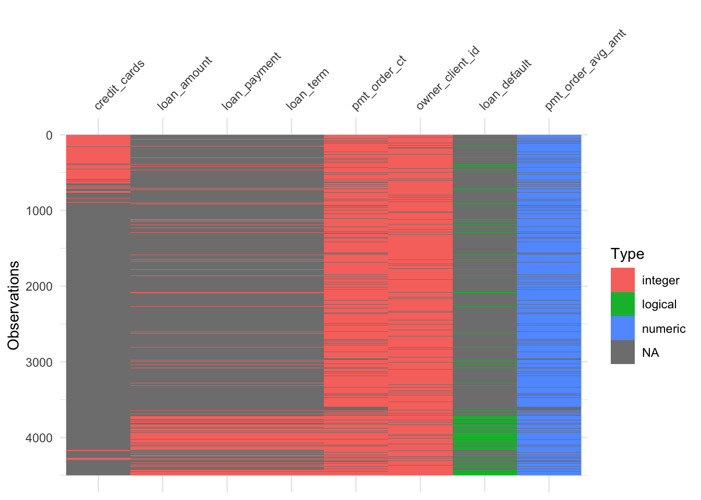
we can find there are lots of NULL values in columns related with loan
gg_miss_var(transactions)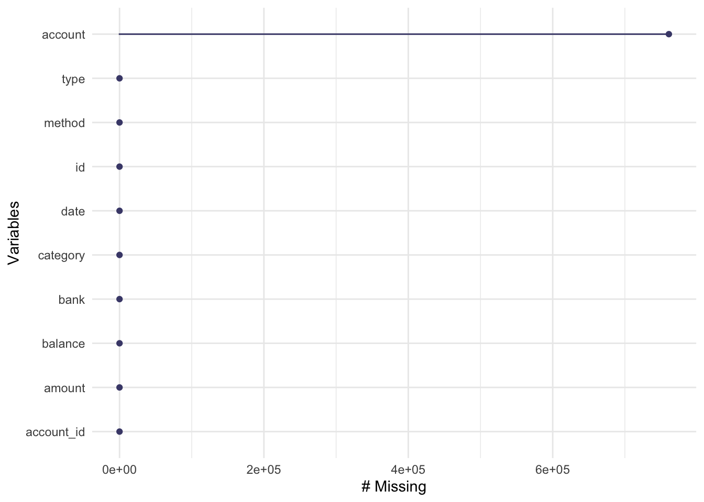
there are only one column have null values that is ‘account’
# filter the dataset to find the accounts with or without credit cards
accounts$credit_cards[is.na(accounts$credit_cards)] <- 0
p <- accounts %>%
ggplot( aes(x=credit_cards)) +
geom_histogram( binwidth=1, fill="#69b3a2", color="#e9ecef", alpha=0.9) +
ggtitle("The count plot of credit cards") +
theme_ipsum() +
theme(
plot.title = element_text(size=15)
)
p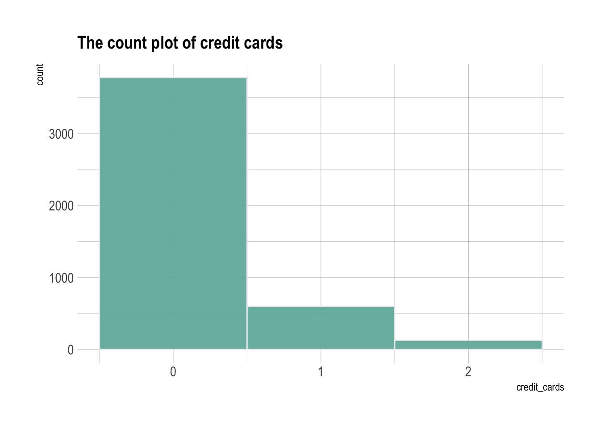
there are 3775 accounts do not have a credit card
# find whether account has loan or not
accounts$loan_status[accounts$loan_status == ''] <- 'Unknown'
ggplot(accounts,aes(loan_status,fill=loan_status)) +
geom_bar() +
labs(x=NULL,y='Count') +
geom_text(stat='count',aes(label = after_stat(count),vjust=-1,size=3.5)) +
ggtitle('The count plot of loan status')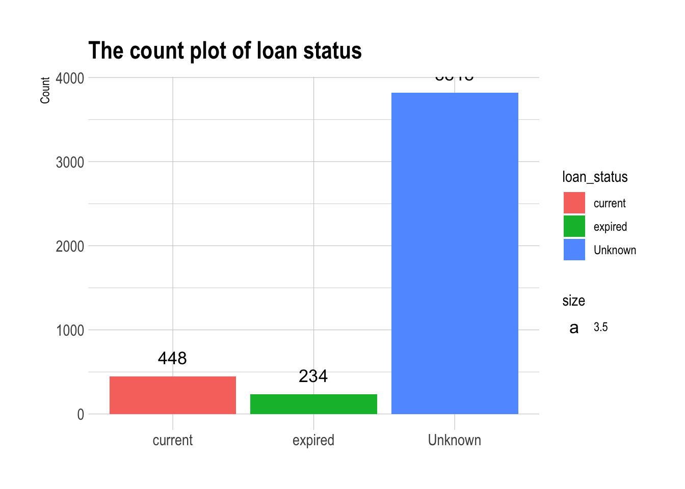
we can there are lots of unknow values, and there are 448 loan is active, and 234 loan is expired
# calculate the average balance
accounts$mean_balance = (accounts$max_balance + accounts$min_balance) / 2
# to show the distribution of average balance for accounts
average_balance <- ggplot(accounts,aes(x=mean_balance)) +
geom_histogram(aes(y=..density..),
binwidth = 10000,
colour = 'black', fill = 'white') +
geom_density(alpha=0.2,fill='blue') +
ggtitle('The distribution of average balance')
average_balance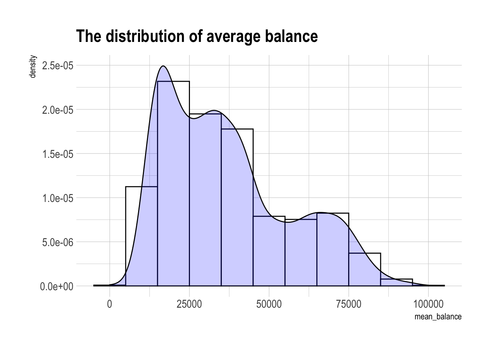
average_balance + facet_wrap(~credit_cards+loan_status,nrow=4,
labeller = labeller(
credit_cards = c('0' = "0 Credit Card",
'1' = "1 Credit Card",
'2' = "2 Credit Cards")
)) +
ggtitle('The distribution of average balance under different number of credit cards')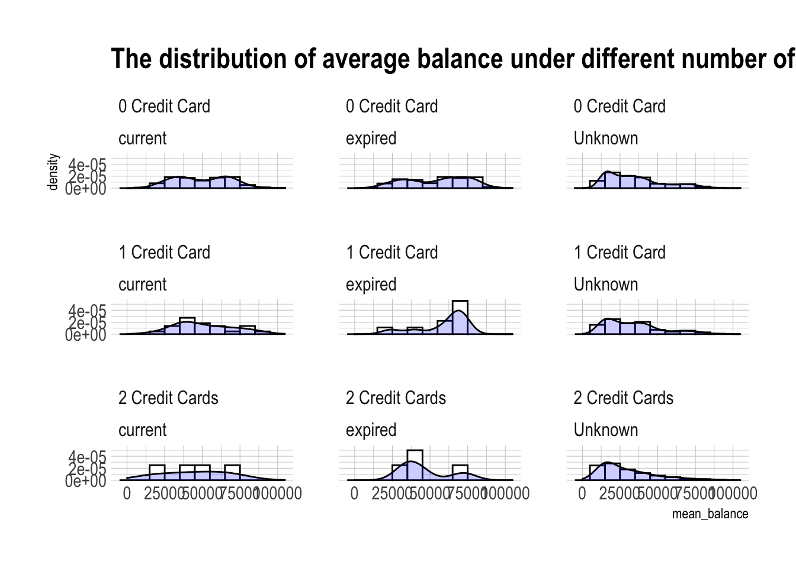
there are no obvious change of distribution of average balance by the number of credit cards
# to make a heatmap to find the count under different credit_cards and loan_status
counts = count(accounts,loan_status,credit_cards)
ggplot(counts,aes(x=loan_status,y=credit_cards)) +
geom_tile(aes(fill=n)) +
geom_text(aes(label=n),stat='identity') +
scale_fill_continuous(low="grey", high="pink", limits=c(0,4000))+
ggtitle('number of accounts type')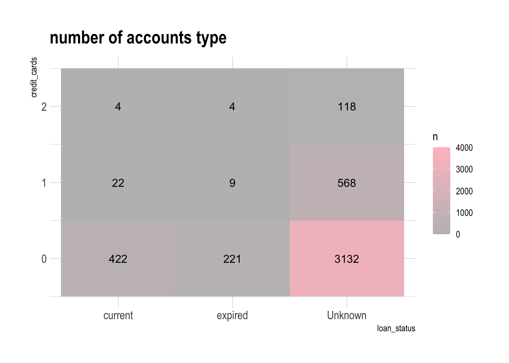
after plotting this matrix, we can find most accounts do not have credit_cards and have Unknow loan status
library(reticulate)# loan packages
import pandas as pd
import matplotlib.pyplot as plt
import seaborn as snstransactions = pd.read_csv('./data/transactions.csv')## sys:1: DtypeWarning: Columns (6) have mixed types.Specify dtype option on import or set low_memory=False.accounts = pd.read_csv('./data/accounts_analytical.csv')# take some descriptive information
transactions.describe()## id account_id amount balance account
## count 1.056320e+06 1.056320e+06 1.056320e+06 1.056320e+06 2.953890e+05
## mean 1.335311e+06 2.936867e+03 5.924211e+03 3.851838e+04 4.567092e+07
## std 1.227487e+06 2.477345e+03 9.522698e+03 2.211787e+04 3.066340e+07
## min 1.000000e+00 1.000000e+00 0.000000e+00 -4.112600e+04 0.000000e+00
## 25% 4.302628e+05 1.204000e+03 1.360000e+02 2.240300e+04 1.782858e+07
## 50% 8.585065e+05 2.434000e+03 2.100000e+03 3.314300e+04 4.575095e+07
## 75% 2.060979e+06 3.660000e+03 6.800000e+03 4.960400e+04 7.201341e+07
## max 3.682987e+06 1.138200e+04 8.740000e+04 2.096370e+05 9.999420e+07transactions.info()## <class 'pandas.core.frame.DataFrame'>
## RangeIndex: 1056320 entries, 0 to 1056319
## Data columns (total 10 columns):
## # Column Non-Null Count Dtype
## --- ------ -------------- -----
## 0 id 1056320 non-null int64
## 1 account_id 1056320 non-null int64
## 2 date 1056320 non-null object
## 3 type 1056320 non-null object
## 4 amount 1056320 non-null int64
## 5 balance 1056320 non-null int64
## 6 bank 273508 non-null object
## 7 account 295389 non-null float64
## 8 method 873206 non-null object
## 9 category 521006 non-null object
## dtypes: float64(1), int64(4), object(5)
## memory usage: 80.6+ MBaccounts.describe()## account_id num_customers ... pmt_order_avg_amt owner_client_id
## count 4500.000000 4500.000000 ... 3758.000000 4091.000000
## mean 2786.067556 1.193111 ... 3710.554169 3365.340504
## std 2313.811984 0.394783 ... 2343.249569 2811.801617
## min 1.000000 1.000000 ... 312.000000 1.000000
## 25% 1182.750000 1.000000 ... 2037.750000 1442.000000
## 50% 2368.000000 1.000000 ... 3085.500000 2852.000000
## 75% 3552.250000 1.000000 ... 4839.937500 4273.500000
## max 11382.000000 2.000000 ... 14811.000000 13998.000000
##
## [8 rows x 55 columns]accounts.info()## <class 'pandas.core.frame.DataFrame'>
## RangeIndex: 4500 entries, 0 to 4499
## Data columns (total 64 columns):
## # Column Non-Null Count Dtype
## --- ------ -------------- -----
## 0 account_id 4500 non-null int64
## 1 acct_creation_date 4500 non-null object
## 2 statement_frequency 4500 non-null object
## 3 account_district 4500 non-null object
## 4 num_customers 4500 non-null int64
## 5 credit_cards 725 non-null float64
## 6 loan_date 682 non-null object
## 7 loan_amount 682 non-null float64
## 8 loan_payment 682 non-null float64
## 9 loan_term 682 non-null float64
## 10 loan_status 682 non-null object
## 11 loan_default 682 non-null object
## 12 max_withdrawal 4500 non-null int64
## 13 min_withdrawal 4500 non-null int64
## 14 max_balance 4500 non-null int64
## 15 min_balance 4500 non-null int64
## 16 credit_bank_transfer_other_txn_ct 4500 non-null int64
## 17 credit_bank_transfer_other_txn_tot 4500 non-null int64
## 18 credit_bank_transfer_other_avg_txn 4500 non-null float64
## 19 credit_cash_other_txn_ct 4500 non-null int64
## 20 credit_cash_other_txn_tot 4500 non-null int64
## 21 credit_cash_other_avg_txn 4500 non-null float64
## 22 credit_other_interest_credit_txn_ct 4500 non-null int64
## 23 credit_other_interest_credit_txn_tot 4500 non-null int64
## 24 credit_other_interest_credit_avg_txn 4500 non-null float64
## 25 debit_bank_transfer_household_payment_txn_ct 4500 non-null int64
## 26 debit_bank_transfer_household_payment_txn_tot 4500 non-null int64
## 27 debit_bank_transfer_household_payment_avg_txn 4500 non-null int64
## 28 debit_cash_statement_charge_txn_ct 4500 non-null int64
## 29 debit_cash_statement_charge_txn_tot 4500 non-null int64
## 30 debit_cash_statement_charge_avg_txn 4500 non-null int64
## 31 debit_cash_other_txn_ct 4500 non-null int64
## 32 debit_cash_other_txn_tot 4500 non-null int64
## 33 debit_cash_other_avg_txn 4500 non-null float64
## 34 debit_bank_transfer_loan_payment_txn_ct 4500 non-null int64
## 35 debit_bank_transfer_loan_payment_txn_tot 4500 non-null int64
## 36 debit_bank_transfer_loan_payment_avg_txn 4500 non-null float64
## 37 debit_bank_transfer_insurance_payment_txn_ct 4500 non-null int64
## 38 debit_bank_transfer_insurance_payment_txn_tot 4500 non-null int64
## 39 debit_bank_transfer_insurance_payment_avg_txn 4500 non-null int64
## 40 debit_bank_transfer_other_txn_ct 4500 non-null int64
## 41 debit_bank_transfer_other_txn_tot 4500 non-null int64
## 42 debit_bank_transfer_other_avg_txn 4500 non-null float64
## 43 credit_bank_transfer_pension_benefit_txn_ct 4500 non-null int64
## 44 credit_bank_transfer_pension_benefit_txn_tot 4500 non-null int64
## 45 credit_bank_transfer_pension_benefit_avg_txn 4500 non-null int64
## 46 debit_credit_card_other_txn_ct 4500 non-null int64
## 47 debit_credit_card_other_txn_tot 4500 non-null int64
## 48 debit_credit_card_other_avg_txn 4500 non-null float64
## 49 debit_cash_household_payment_txn_ct 4500 non-null int64
## 50 debit_cash_household_payment_txn_tot 4500 non-null int64
## 51 debit_cash_household_payment_avg_txn 4500 non-null float64
## 52 debit_cash_negative_balance_charge_txn_ct 4500 non-null int64
## 53 debit_cash_negative_balance_charge_txn_tot 4500 non-null int64
## 54 debit_cash_negative_balance_charge_avg_txn 4500 non-null float64
## 55 debit_cash_insurance_payment_txn_ct 4500 non-null int64
## 56 debit_cash_insurance_payment_txn_tot 4500 non-null int64
## 57 debit_cash_insurance_payment_avg_txn 4500 non-null float64
## 58 pmt_order_ct 3758 non-null float64
## 59 pmt_order_avg_amt 3758 non-null float64
## 60 owner_client_id 4091 non-null float64
## 61 gender 4091 non-null object
## 62 birth_date 4091 non-null object
## 63 owner_district 4091 non-null object
## dtypes: float64(17), int64(38), object(9)
## memory usage: 2.2+ MB# filter the dataset
accounts['credit_cards'] = accounts['credit_cards'].fillna('Unknow')
sns.set_theme(style='darkgrid')
ax = sns.countplot(x="credit_cards", data=accounts)
ax.set_xticklabels(['One Credit Card','Two Credit Cards','Unknown'])## [Text(0, 0, 'One Credit Card'), Text(1, 0, 'Two Credit Cards'), Text(2, 0, 'Unknown')]ax.set_title('The countplot of credit_cards')
ax.set_xlabel('Number of credit cards')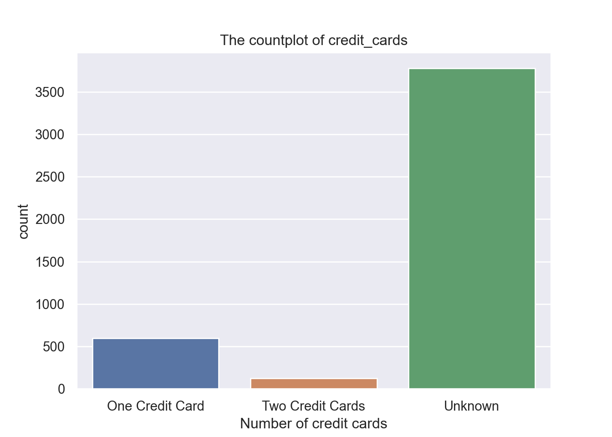
accounts.loan_status = accounts.loan_status.fillna('Unknown')
sns.set_theme(style='darkgrid')
ax = sns.countplot(x="loan_status", data=accounts)
ax.set_title('The countplot of loan_status')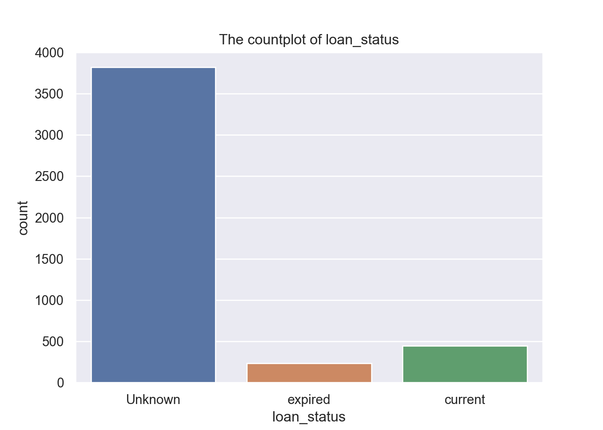
same as the last plot, most accounts do not have loan status information, and second highest is current loan.
accounts['mean_balance'] = (accounts['max_balance'] + accounts['min_balance']) / 2
f, axes = plt.subplots(1, 2)
sns.boxplot(x='mean_balance',data=accounts,ax=axes[0])
axes[0].title.set_text('The Boxplot of Mean Balance')
sns.distplot(x=accounts.mean_balance,ax=axes[1])
axes[1].title.set_text('The KDE plot of Mean Balance')
axes[1].set_xticklabels(labels='mean balance')## [Text(-50000.0, 0, 'm'), Text(0.0, 0, 'e'), Text(50000.0, 0, 'a'), Text(100000.0, 0, 'n'), Text(150000.0, 0, ' ')]
##
## /Users/xuguiming/Library/r-miniconda/envs/r-reticulate/bin/python:1: UserWarning: FixedFormatter should only be used together with FixedLocatorplt.tight_layout()
plt.show()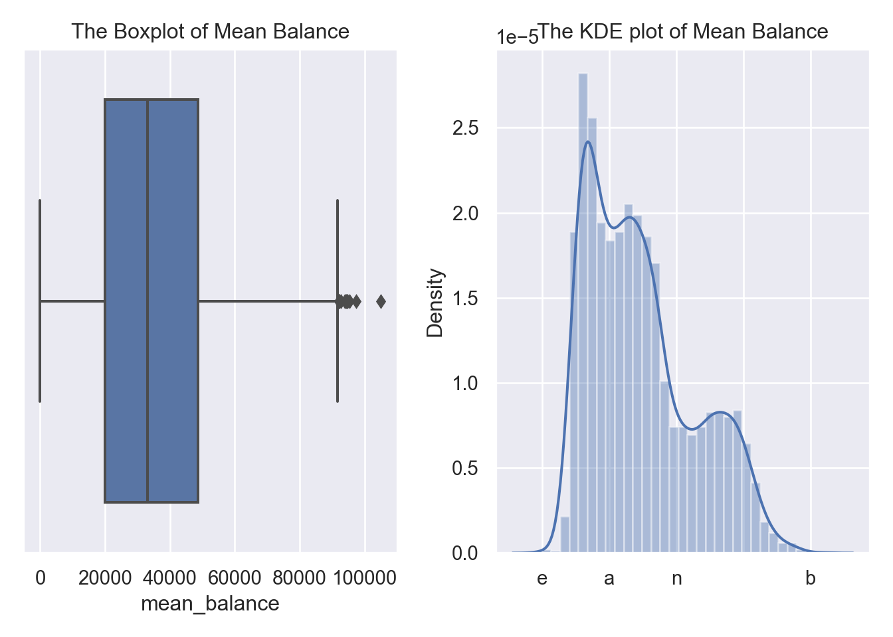
# to make the boxplot and facetgrid under different number of credit_cards and loan_status
ax = sns.boxplot(x="loan_status", y="mean_balance", hue="credit_cards",
data=accounts, palette="Set3")
ax.legend(loc='center right', bbox_to_anchor=(1.25, 0.5), ncol=1)
ax.set_title('The Boxplot of mean balance in loan_status and number of credit cards')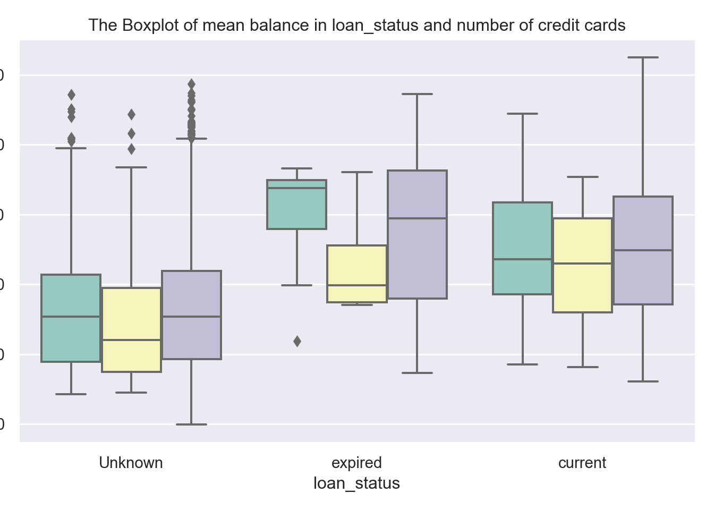